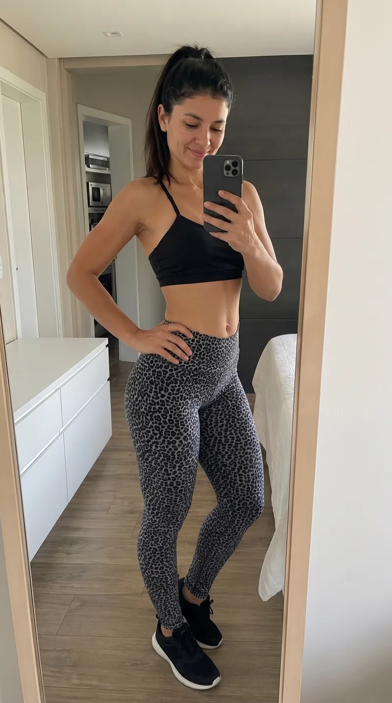
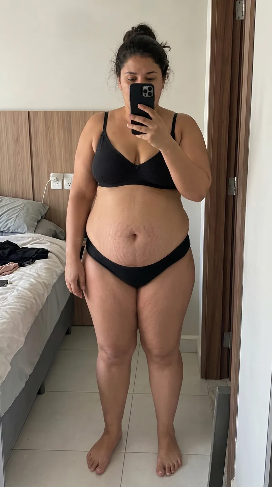

O vídeo abaixo revela o mecanismo que nenhuma dieta te contou: por que você sente fome incontrolável, por que a dieta sempre quebra à noite - e o que muda quando você corrige esse erro.
A dieta cetogênica não é modinha. É um dos protocolos alimentares mais estudados do mundo.
O mecanismo é real: Quando o corpo fica sem glicose, o fígado começa a produzir corpos cetônicos — e passa a usar a gordura armazenada como combustível principal. Esse processo se chama cetose nutricional, e é exatamente o que o Cetose Consciente ensina a ativar do jeito certo para gerar saciedade infinita.
Fonte: Harvard Health Publishing, revisado pelo Dr. Howard E. LeWine, Editor Médico Chefe — março de 2024
Os numeros confirmam (Meta-analise PubMed, 2022):
Estudo científico: Zhou C. et al. | PubMed ID: 36012064
O que isso significa para vocÊ: Você não esta apostando em promessa de influencer. Esta seguindo um protocolo que pesquisadores de universidades estudaram, mediram e validaram.
A diferença entre quem viu resultado e quem não viu nunca foi a ciência sempre foi como entrar em cetose corretamente.
| Comparativo | Dieta Comum | Cetose Consciente |
|---|---|---|
| Controle da fome | ||
| Perda de peso sustentável | ||
| Sem efeito sanfona | ||
| Sem disciplina extrema |
Sem cirurgia. Sem remédio. Sem disciplina extrema. Apenas o corpo funcionando do jeito que deveria queimando gordura como combustivel.
Em 3 a 6 meses
20kg /média
Veja pessoas reais que transformaram seus corpos usando o método Cetose Consciente.


Perdeu 15kg com o método
Perdeu 7kg com o método
Perdeu 18kg com o método
Pagamento único • Acesso imediato
Preço antigo
R$ 47,90
Preço atual
R$ 27,90
Pagamento único - Acesso imediato
Risco Zero
Selo de Garantia
Você pode acessar o método Cetose Consciente hoje e testar por 7 dias completos. Se não sentir diferença no seu corpo, energia ou controle alimentar, basta solicitar o reembolso e devolveremos 100% do seu investimento.